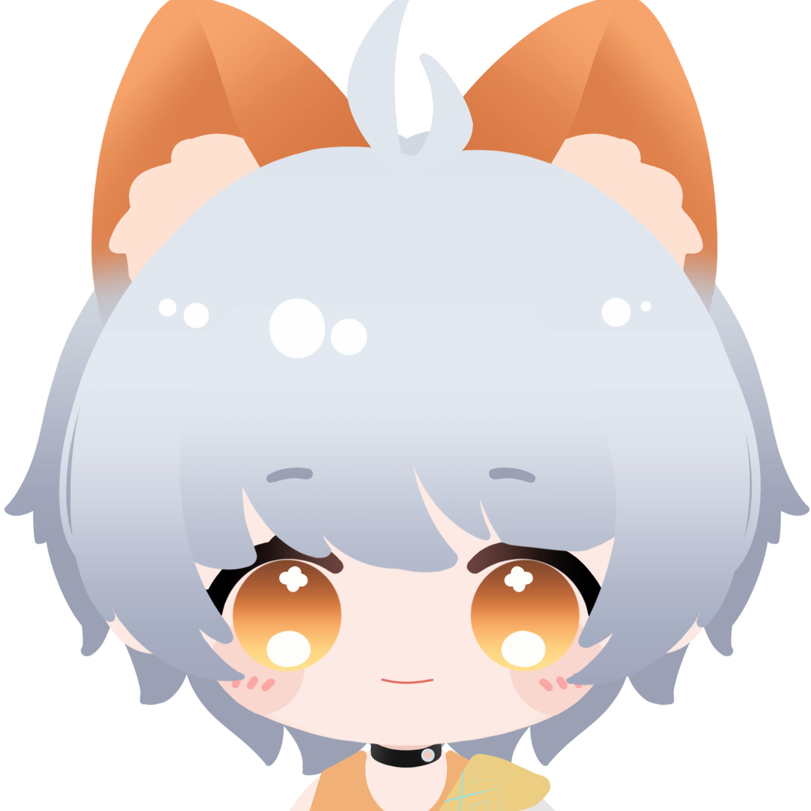

I am interested in turning research insights into experiences that feel intuitive and honest.
About me

Who I am
I'm a student at Northeastern University majoring in Economics and Computer Science. Originally from China, I bring an analytical mindset and a builder's instinct to everything I work on.
I'm drawn to roles in data analysis and software development, where I can use both sides of my degree: the quantitative rigor of economics and the technical depth of CS. I believe the most interesting problems live at that intersection.
Outside of design, I enjoy gaming and game design. I have some experience in Minecraft and Don't Starve Mod development. Besides, cooking is my biggest hobby, which I know a lot in Chinese and Italian food.
Case Study
A social-academic tool designed to connect students and universities.
Universities struggle to help students build meaningful academic networks and maintain engagement beyond the classroom. Existing tools are either too academic or too social — there's a gap for something in between. Orange set out to bridge that space by creating a structured yet human platform for academic community-building.
"Busy college students need a low-pressure way to connect with classmates because current academic environments lack structured, approachable opportunities for meaningful interaction."
Our evaluation plan combines think-aloud testing, task metrics (success rate, time on task), SUS surveys, and an A/B test against a traditional forum model — focused on whether Orange reduces social uncertainty and supports low-pressure connection.
Looking back, we moved into feature ideation too quickly. Given the chance to start over, we'd invest more in upfront user research, use affinity diagramming to prioritize core functions earlier, and pay closer attention to emotional experience throughout the task flow — not just whether users can complete tasks, but whether the interface makes them feel comfortable and at ease doing so.
What I care about
I'm a member of Slow Food, a student club dedicated to using the power of food to build a more sustainable and equitable world.
I explore 3D modeling as a creative outlet.
Drawing is how I slow down and observe.
Open to internships, collaborations, and good conversations about design.